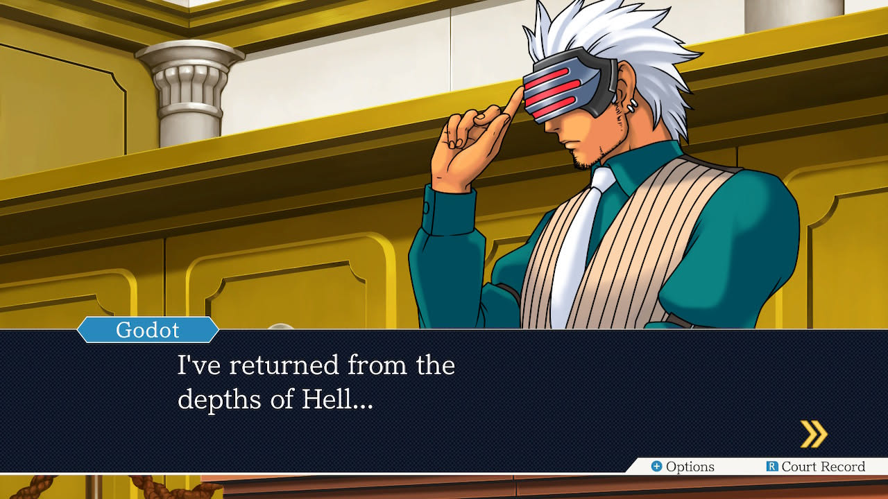
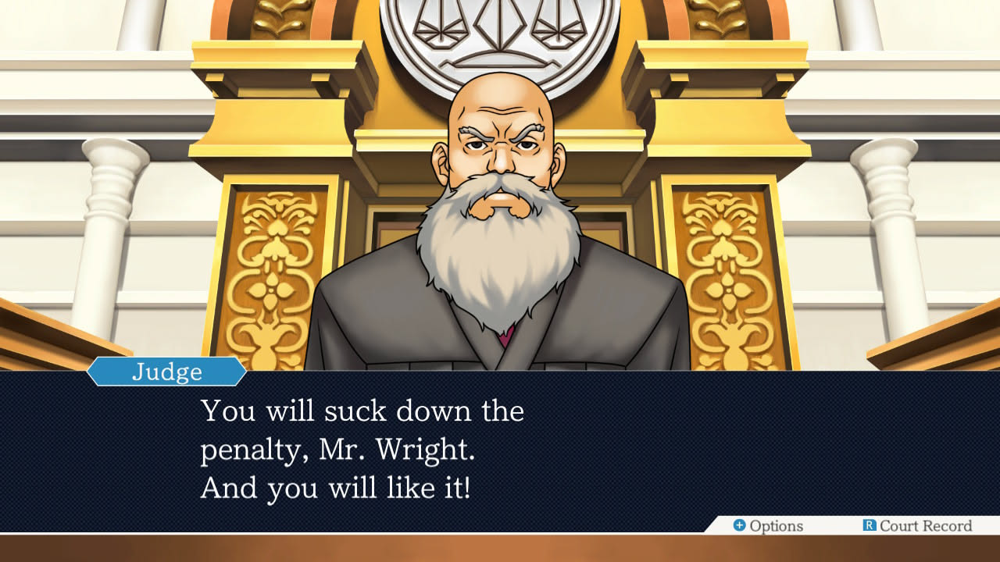
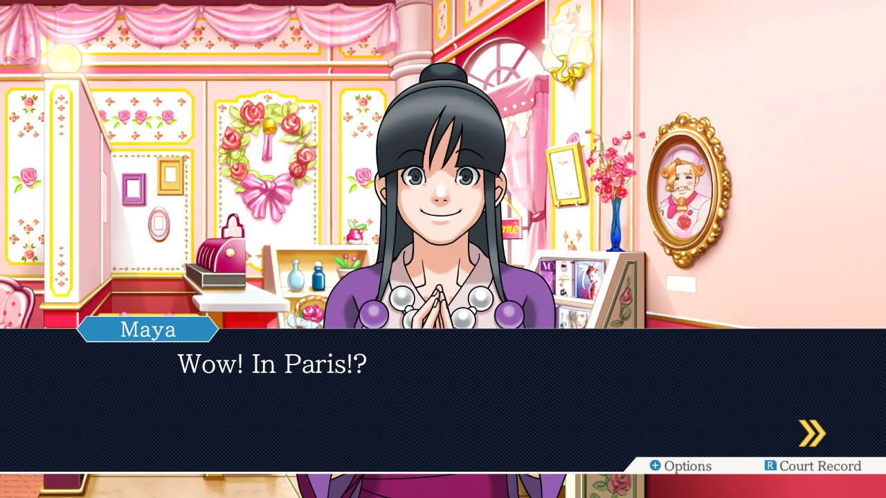
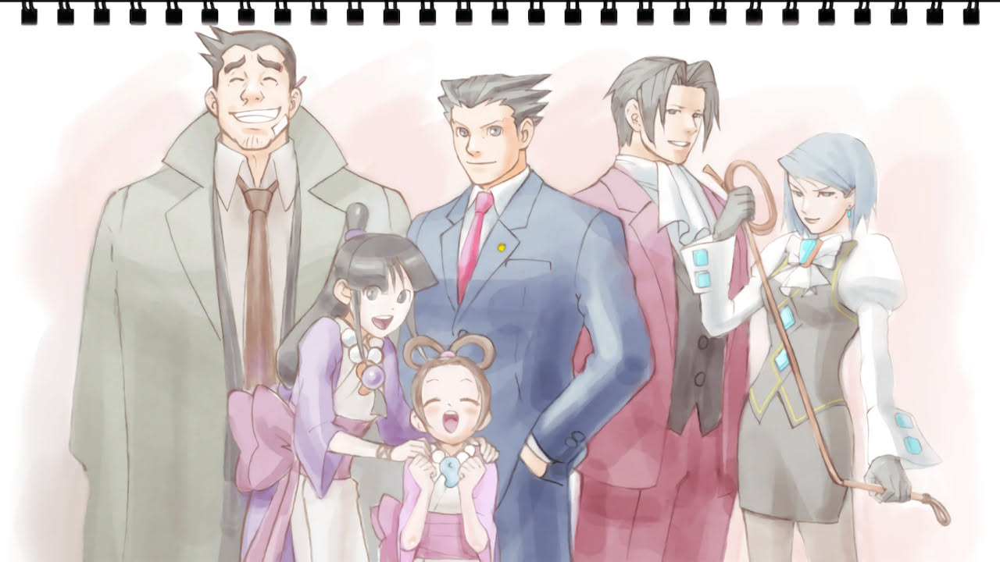
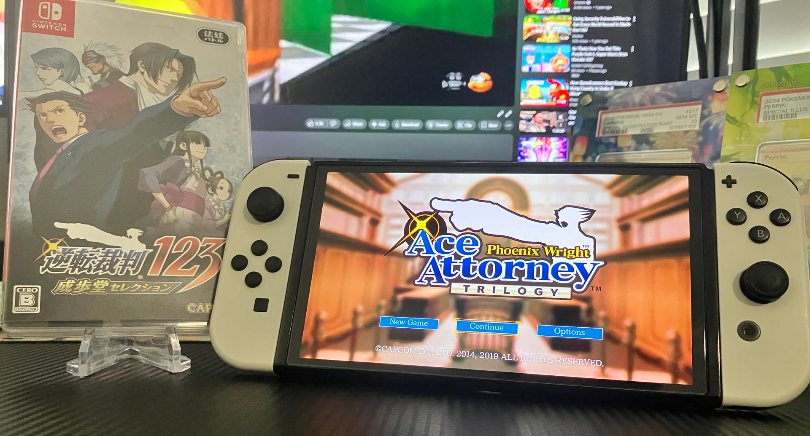

1game1week - Week 21 (5/21/25) - Phoenix Wright: Ace Attorney - Trials and Tribulations
Hey all! It's week 21! (5/21 -> 5/28)
That's funny... it's the 21st, and we're doing week 21. Also, we're in the 21st Century! Coincidence?
I'm trying out a slightly different style. I received feedback that images might help spice up the content, as it allows to tie visual to my thoughts or narration. This was probably most prevalent in the Observer post, since I talked a lot about people in the future being slobs.
It might seem a bit awkward at first. I'm trying to get used to it and experimenting, so it'll be weird for a little while. I think the only post that has screenshots/video has been the post for Yumia, because I was trying to illustrate the glitches that happened.
Diet update: I hit 160, so I'm glad about that. It's crazy. I remember in college when I was super excited to hit 110 when I started hitting the gym.
Guess bodies really do change overnight. It's not like it's been seven years or anything, right? Wait...
Haven't really felt in the mood to stream recently. It's a bit sad, because it's enjoyable. I'll get back to it soon! I would like to stream tomorrow, Sat/Sun and then Monday, since it'll be a holiday.
Oh, I mentioned the Genesis lot before.
I was able to fix up three out of four of them decently easily. The fourth's a bit strange as I don't see any easy-to-spot board damage. It should, in theory, be perfectly fine... but I haven't really had time to go down the rabbit hole there, so I'll remain in suspense.
Thinking about it... it was actually my first pre-fourth gen console. I've never owned anything older than an N64. It feels weird...
A while back, I modded my CRT so it accepts analog RGB as an input, and it's been really cool that I'm finally able to use it with a console. I wanted to try playing Valis, but it seems the controller I purchased off eBay might not be good. The left input didn't work, and it turned out the d-pad plastic had broken off. The A and B buttons don't work. So in a game like Valis, I'm a bit of a sitting duck...
I'll get myself a controller at some point.
In the meantime...
New games from 5/14 -> 5/20:
Valis: The Fantasm Warrior (Genesis)
Currently, my backlog is at +12 (lower is better, +1 from last week).
And onto 1g1w. Once again, a game is considered "beaten" if I've accomplished the main objective of the game.
GAME: Phoenix Wright: Ace Attorney - Trials and Tribulations
PLATFORM: Switch
STARTED ON: 6/19/24
BEATEN ON: 4/24/25
Took me a while to beat, huh...?
I'm kidding. I just left it hanging for a while. I started replaying the first few games in June of last year because I picked up the Apollo Justice Trilogy, just to have Investigations announced the day before I finish Justice for All. It made me stop for a bit, just so I could have things fresh in mind... until I didn't come back to it at all, so here we are.

This series is always a treat to play. This is my second time playing through Trials and Tribulations. I'll be honest... the first time around, over a decade ago... I used a guide when my tiny brain couldn't figure it out at first.
I'm happy to report I actually used my brain this time and got through it. It's been a decade, so I really didn't remember too many details about the cases (although I did remember who the culprits were, lol)

People who have known me for a long time might think me saying this is weird, but I really think Godot is just my favorite prosecutor. There's something so alluring about him... makes me want to brew some coffee.
I'm trying here to think which case from the game was my favorite. To be completely honest, they were all solid. You'll occasionally have stinkers in these games. The one that comes top of mind is Turnabout Big Top.
If I were to pick, it's probably just Recipe for Turnabout, or case 3. There's a really decent blend of humor and seriousness the series really excels in as well as really funny characters like "Xineohp". The "trap" at the end of the case was really on brand for the series.

For an Ace Attorney game, it takes itself decently seriously from this case on out. There's always a light-hearted side. Cases 4 and 5 rely a bit more on tension and drama, so these chapters that toe the line between not taking themselves seriously and kind of taking themselves seriously are really fun to play through.
At some point this year, I'll probably get myself to play through the Apollo Justice Trilogy. I've actually not played past the first Apollo Justice into Dual Destinies / Spirit of Justice. Neither of the TGAACs either. I'll get to them... at some point.
Maybe we can manifest Layton vs. Phoenix Wright being ported to current consoles, and then we'll have the entire Ace Attorney franchise on the Switch! ...Right?

That's all for now. See you all next week! Stay safe!

Thanks for reading! If you need to contact me for any reason, please feel free to email me at aru@hoshikawa-aru.com.